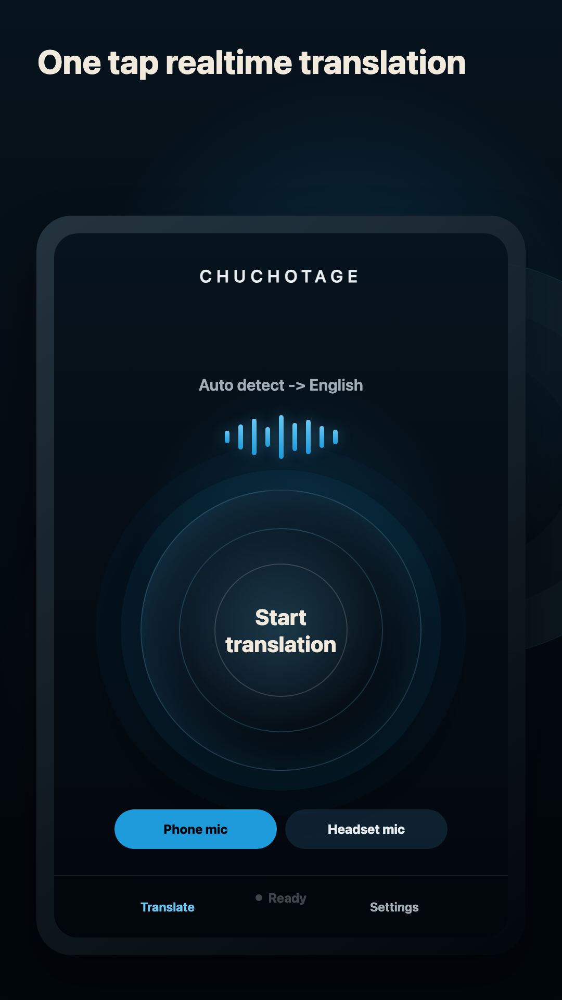

Headphone translator app
Hear live translation through headphones.
Put the translated voice in your ear, keep the room natural, and avoid turning every conversation into a phone-speaker moment.
Use caseConferences, school meetings, family dinners, counters, and travel moments where private audio matters.
Works withOrdinary wired, USB-C, Bluetooth, and AirPods-style headphones as platform routing allows.
Why it mattersHeadphones reduce echo, keep translated speech private, and make Chuchotage feel like listen-along support.
What it does
What it does
Chuchotage can play translated speech through the current device output. Headphones and earbuds are the preferred route because they keep translated audio out of the shared room.
A headset or earbud microphone can also be selected where the platform exposes it. If the selected headset input is unavailable, the app should tell you instead of quietly using a different mic.
Screenshots
Current app screens, not mockups.
The current mobile screens make headphones practical: simple start/stop, microphone selection, and output-language setup.



Platforms
Supported platforms today.
iPhone and iPad
Public on the App Store. Current iOS/iPadOS use is microphone-first with translated playback; same-device app audio is not shipped yet.
macOS
Mac download is listed on the site. The Mac app is built for playback-audio translation with macOS system-audio permission on macOS 14.2+.
Android
Public on Google Play. The native Android app supports Phone mic, Headset mic, and Device audio on Android 10+ where Android permits playback capture.
Windows
The Windows companion captures selected Windows playback audio and plays translated audio to a selected output device. A public Windows download is not posted yet.
Audio sources
Headphones, mics, and app audio.
Earbuds or headphones
Use them for translated output on mobile and desktop. They are not required for every session, but they are usually the better experience.
Headset mic
Useful when the room is noisy or the phone is not close to the speaker. Chuchotage should fail clearly if this input is selected but absent.
Built-in mic
Use it when the phone, tablet, or computer is physically near the speech you want translated.
Computer or app audio
Use platform-specific playback capture on Mac, Android, or Windows when the source is device audio rather than a person nearby.
Limits
What does not work yet.
Headphones do not make translation offline or certified.
Using speakers can cause feedback into the microphone.
Some Bluetooth routes expose output but not a usable microphone input.
iOS/iPadOS same-device app audio is not shipped yet.
Privacy shape
Personal translation without an ad or analytics layer.
No ads and no analytics SDKs in the app.
Credentials and app preferences are stored on the device using the platform secure-storage path.
During normal API-key or ChatGPT use, selected audio and translation settings are sent from the app to OpenAI while translation is active.
Chuchotage does not run a hosted audio relay and does not keep transcript history.
Related pages
Pick the route that matches what you need to translate.
Download